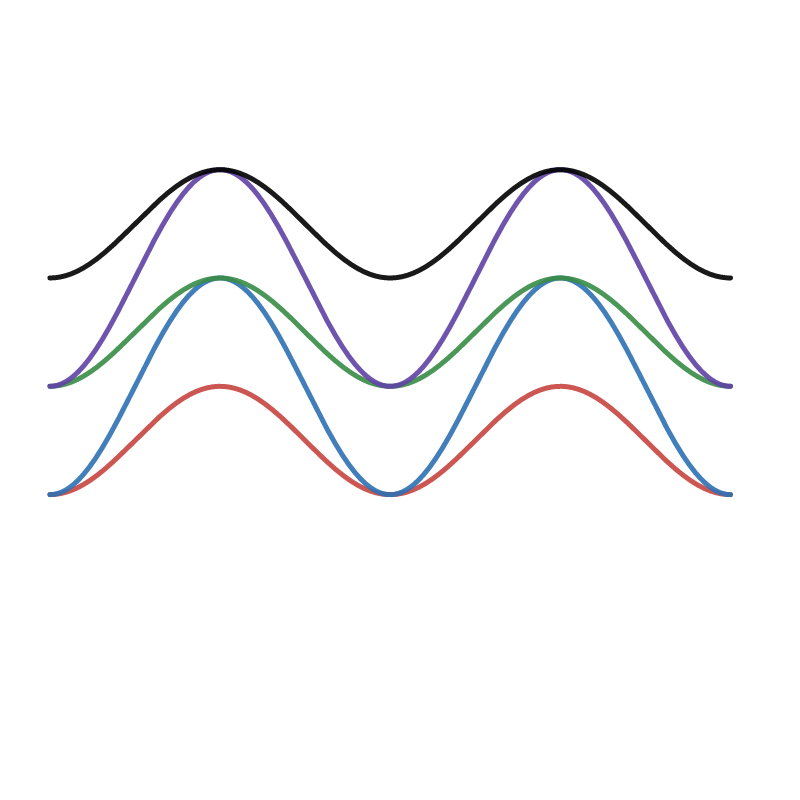
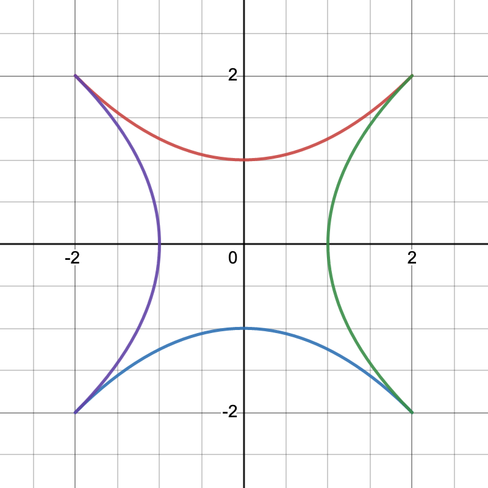
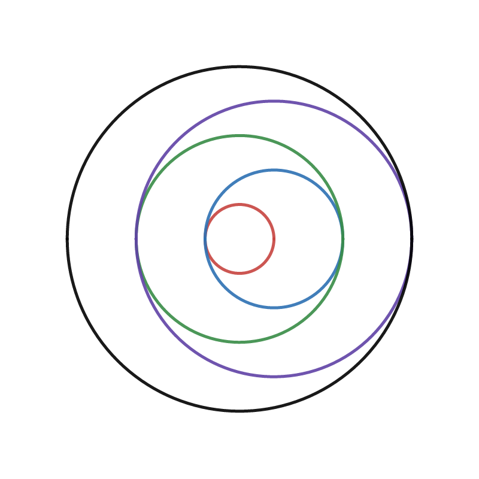

Mathematical Design, Spring 2023
Course Content
Check back often for homework assignments, tutorials, and key topics covered each day.
Homework 0:
Before class on Thursday, January 26:
- Join our Discord Server. If you've never used Discord before you'll need to sign up for an account. Before class: Say hello, Introduce yourself, and Share a fun link in the #introductions channel.
- Get pumped to join us ON CAMPUS at 10:45am on Thursday, January 26!
Thinking about Functions
Thursday, January 26
In class:
- Today we are setting the stage for a thought-provoking semester.
- Discussion: What does it mean to be creative with mathematics?
- Course Expectations & Syllabus Discussion
- Group discussion and exploration.
- Discussion: What is a function?
- Introduction to Desmos
- Desmos Activity: "128 Day 01 Introduction to Desmos"
Tuesday, January 31
Before class:
- Thoroughly read all pages of the course webpage. This should answer all the questions that you may have about the class.
- Go to our Discord Server.
- Introduce yourself in the #introductions channel if you didn't do that earlier.
- Answer the Office Hours Poll posted in the #general channel.
- Click on my name (Prof. Hanusa) on one of my posts. From the menu that appears, send me a Message (a DM) in which you say "Hello Prof. Hanusa", includes the class you are in (MATH 128) and the name you prefer to be called. Feel free to include your preferred pronouns. Think of this as opening a dialog with me that we can continue throughout the semester when you need to get in contact with me.
- Contribute to the Daily Question for January 31 thread in the #inspiration channel.
- Go to Desmos and log in to our Desmos classroom.
- Complete the "128 Day 01 Guess My Rule" activity to practice the definition of a function.
- Complete the "128 Day 02 The (Awesome) Coordinate Plane Activity" to re-familiarize yourself with the coordinate plane.
- (Feel free to work with another classmate or ask a question on our Discord Server.)
In class:
- Discussion of plotting points
- Exporting and Sharing drawings on Discord.
- Work through "128 Day 02 - Plotting Points". This activity discusses:
- Points
- Tables
- Connecting points
- Moving points
- Lists
- Arithmetic Sequences
- Plotting points using lists
- Work through "128 Day 02 - Points on Functions". This activity discusses:
- Defining functions
- Points on functions
- Functions and tables
- Functions and lists
- If you have any questions or see something neat, ask and share with your neighbors.
- If you complete the exercises early, start being creative on desmos.com/calculator. How elaborate of a picture can you create using only dots and lines? Can you create a picture that uses all the techniques from these activities? (Make sure you log in to save your work!!!!)
- Challenge Questions. Was this all easy peasy for you? Try the following...
- Challenge 2.1: The points (4,5) and (-3,2) lie on a line. Plot 55 more points on that line.
- Challenge 2.2: Plot 17 points on a circle.
- Challenge 2.3: Create a point that moves when you drag it, and when it moves it moves 9 other points simultaneously.
Thursday, February 2
Before class:
- Use the techniques from the in-class activities to create a drawing in Desmos with the following properties:
- Create some points with a table.
- Create some points with lists.
- Create some points using a function.
- Connect some of those points with line segments.
- Make the result interesting.
- Choose a color scheme intentionally.
- Turn off the gridlines and axes on your picture.
- Now, you will Export and Share your drawing to our class:
- First, navigate over to the Daily Question for February 2 thread in the #points channel on our Discord Server. Prepare to create a post.
- Back in your Desmos calculator, find the icon with an arrow leaving a box at the top right of the page, right next to your name.
- Click on the icon to open up the "Share Your Graph" dialog.
- In the box is a URL. Copy the URL and paste it in your Discord post.
- Go back to the Desmos window. Click on "Export Image" and then "Download PNG".
- Figure out where the browser downloaded the image and upload it to the Discord post you started.
- Send it to the class to share it!
- Feel free to comment on other students' artwork and/or leave emojis.
In class:
- Parent Functions (Desmos Notebook
- Implicit Functions (Desmos Notebook)
- Identifying parent functions
- Describing parent functions
- Work through "128 Day 03 - Polygraph: Parent Functions". This is an interactive activity with classmates. You are practicing:
- Identifying parent functions
- Using mathematical terminology to describe functions
- Interpreting your classmates' mathematical terminology
- Using logical reasoning to determine your partner's graph
- Work through "128 Day 03 - Exploring Functions with Sliders". This activity discusses:
- Plotting parent functions
- Exploring functions with sliders
- Saving data from variables
- Turning a function on its side
- Plan to meet with another classmate to work together outside of class before Tuesday 2/7.
Tuesday, February 7
Before class:
- Make sure you have completed all Desmos Activities up until this point, including the Desmos Activity "128 Day 03 - Exploring Functions with Sliders".
- Meet for at least one hour outside of classtime with at least one other classmate. Your goal is to get together to discuss being creative with Desmos and work to help each other complete the two tasks below. Feel free to use Discord to find a partner (or partners) to work with.
After your meeting write one paragraph about something that you learned or experienced that you would not have if you had worked alone. Also write down the name of the person you met with and when you met! I will collect this paragraph in class.
- Task 1. Make functions that have certain properties. Open a new Desmos worksheet. (Remember to log in!) In the first cell of the worksheet, write your name in a "note" cell. Now, given the experience you gained in class, try to create graphs of five functions whose graphs have the following properties. Feel free to be as creative as possible. When you have finished, open the Share Dialog, copy the URL that was generated, and submit that URL in this form.
- A line that looks almost vertical.
- A graph with a sharp corner.
- A graph with exactly four bumps.
- Steps going downward.
- A graph that has waves like the ocean but wiggles right and left instead of up and down.
- Task 2. Be creative with parent functions. Choose at least three different parent functions and at least one implicit function to explore. Type them into your Desmos worksheet and introduce sliders for coefficients, powers, and whatever else you can think to add. Move the sliders until the functions are interesting to you. Make sure you record the values of the sliders and the formula including the numbers (and not variable names) that gave you the graph you liked best.
Export and Share your favorite function(s) to our class Discord Server (like you did on last Thursday) in the Daily Question for February 7 thread in the #functions channel. Explain in a few sentences what about your example you liked.
In class:
- Creating new functions
- Work through "128 Day 04 - Restrictions". This activity discusses:
- Drawing only a piece of your graph
- Restricting the domain of your function
- Using sliders to choose your domain carefully
- Restricting the domain of other variables
- Work through "128 Day 04 - Translations". This activity discusses:
- Restricting the domain of your function
- Translations of explicit functions
- Translations of implicit functions
- Work through "128 Day 04 - Copies". This activity discusses:
- Using a list in place of a variable
- Using lists to modify multiple coefficients in a function simultaneously
- Being intentional about the entries of the list
- More advanced implicit functions (Desmos Notebook) (post)
Artistic Ideas and Tools
Thursday, February 9
Before class:
- Make sure you have completed all Desmos Activities up until this point, including all the Desmos Activities from Day 04.
- Practice the techniques from Tuesday's activities with an eye toward creating something you might use for the first project. Do the following.
- Find a function whose graph has a shape you like.
- Restrict the domain of your function so you have a "snippet" of the graph.
- Insert h and k's into your equation(s) so that you are able to translate the "snippet" using a slider. Make sure the slider works correctly.
- Delete the slider cells. Replace them by new cells that define h and k as lists instead.
- (By the way, I highly recommend working together with classmates on this task!!! It will be helpful to have input from someone else who is working on something similar, in order to ask each other questions as you go along.)
- Export and Share your resulting picture and Desmos notebook to our class Discord Server (like you did on last Thursday) in the Daily Question for February 9 thread in the #translations channel. Explain in a few sentences what about your example you liked.
In class:
- What makes art Art?
- Elements of Art and Design
- Aesthetics of Mathematical Functions
- Crowdsourcing a list of terms that might describe a piece of art.
- The design process
- Discussion of Project 1.
Tuesday, February 14
Class today will be held in the library. We will meet in Rosenthal Library Room 227 at our normal class time. This room is on Floor 2 of the Library. After you enter the library, take the main staircase one flight down, turn left, continue along the wall to your left until you find the room. Please be ON TIME!!!
Before class:
- Required Readings: Read these resources about the elements of art and design:
- Understanding Line in Art
- Five types of lines in Art
- The Seven Elements of Art.
- The Principles of Design from the Getty Museum.
- Find a few terms that you like from the a list of terms we crowdsourced last class.
- Work to create a scene that reflects the terms you chose. The scene should be monochromatic—every function should be the same color. Try to push yourself to expand your repertoire and the types of functions that you use.
- Export and Share your resulting picture and Desmos notebook to our class Discord Server in the Daily Question for February 14 thread in the #art-and-design channel. Also Share the terms that influenced your work and write a sentence or two in which you assess whether you think you were successful in capturing the essence of those terms.
In class:
- Makerspace Orientation
- AxiDraw Orientation
- Inkscape Tutorial
Thursday, February 16
Class will be held in our normal classroom, Powdermaker 212.
Before class:
- You are going to start working on Project 1 in earnest. Complete the following steps to build the basis of your artwork.
- Your goal is to draft three different initial sketches that could form the basis for your final piece of art.
- You can start these sketches on paper if you like, however it is very important that you work to translate your ideas into mathematical functions and display them in Desmos.
- You may find it helpful to think about the visual properties you are going for in your sketches, similar to the list of terms we crowdsourced. Feel free to use the resources above to find some words to describe the properties that you want to explore. Write those words down so you can remember them later. (More words: HERE, HERE, HERE.)
- You should use Desmos as a sketchpad. Start off with a parent function (or a couple), and use the techniques from class to modify and combine the functions to a desired shape and size. Introduce sliders to to modify your parameters so that they are exactly where you want them to be.
- Once you have an initial shape that works for you, save the notebook. You should be creating many different notebooks, one for each seed of the drawings you wish to explore.
- Once you have tweaked your sketches sufficiently that you are happy that each sketch matches the idea you are aiming for, export the three sketches to five SVG files, NOT PNG files. We went over this in class, and here is a video that shows those steps again: (Exporting your artwork to SVG.)
- Bring these to class. I am expecting THREE draft artworks from every person, each with its own style. We will share and discuss these together in class.
- As part of your project lab report, you will be reflecting on the creative process of coming up with the ideas from your artwork. Write at least one paragraph (5–7 sentences) about what you experienced, or what was difficult, or the process you used to complete these first steps. Save this paragraph on your own computer so that you can use it during your writeup. Then submit it here before class.
- Once you have completed the Makerspace Orientation, you are allowed to use the Makerspace whenever it is open. Feel free to explore it at your own pace.
In class:
- A discussion about organizing your Desmos Notebook
- Sharing work with each other
- In-class work day
- Practicing working with Inkscape
Thursday, February 23
Class today will be held in Rosenthal Library Room 227.
Before class:
- Take some time outside of class to go to the Makerspace and practice using the AxiDraw to generate artwork you designed in Desmos. As you learned earlier this semester, working together with a classmate (a) helps with time mangagement, (b) gives you someone else to help you troubleshoot, and (c) makes the whole process more pleasant. So make a plan to go with someone else!
- Create a digital record of your visit to the Makerspace by doing one of the following things:
- Take a picture together with your classmate in the Makerspace.
- Take a selfie with the AxiDraw setup.
- Take a video of your process getting your artwork into Inkscape.
- Take a video of the AxiDraw machine in motion.
- Take a picture of the many pieces of paper you used during the trial and error phase.
- Something else creative involving the time you spent at the Makerspace.
- Post your digital record on our Discord Server in the Daily Question for February 23 thread in the #in-the-makerspace channel.
- As part of your project lab report, you will be reflecting on the process of learning how to use the AxiDraw machine and the trials and tribulations of the prototyping process. Write at least one paragraph (5–7 sentences) about the experience of learning how to use the Makerspace and the AxiDraw machine. Save this paragraph on your own computer so that you can use it during your writeup. Submit it here before class.
In class:
- Class today will be held in Rosenthal Library Room 227.
- In-class work day in the computer lab and Makerspace.
- Get close to finalizing your final piece.
Tuesday, February 28
Class will be held in our normal classroom, Powdermaker 212, until further notice.
Before class:
- Complete Project 1.
- Bring in a physical copy of your final piece of art, a printout of your lab report, and a link to your Desmos file.
In class:
- Together we'll watch a short video about How to critique.
- Artwork critiquing and refining.
- Peer Review Day. Complete the peer review, forward your responses to your partner.
- Time for project revision.
- Signing your work
Dilations and Combining Functions
Thursday, March 2
Before class:
- Revise your artwork and project based on the feedback from your classmates.
- Update your essay to reflect the entire revision process.
- Bring in TWO SIGNED COPIES of your artwork.
- Submit your lab report at this Dropbox link. (ONLY .pdf or .docx formats are acceptable)
- Submit a link to your Desmos file here.
In class:
- Debriefing about Project 1.
- Work through "128 Day 10 - Dilations". This activity discusses:
- Horizontal Dilations
- Vertical Dilations
- Combining Dilations
- Reflections
- Work through "128 Day 10 - Combining Transformations". This activity discusses:
- Combining Translations and Dilations
- Applying transformations to pieces of functions
- Using lists to create multiple transformed pieces
- Work with your classmates to recreate these images:   
Tuesday, March 7
Before class:
- Practice the techniques from Thursday's activities. Do the following.
- Start with a function or implicit function you have never used before.
- Introduce coefficients and restrict the domain as necessary to that you have a "snippet" of a graph that is pleasing to your eye.
- Now create a transformed copy of this "snippet": Insert a's, b's, h's, and k's into your equation(s) so that you are able to transform the "snippet" using a slider. Make sure the slider works correctly.
- Arrange the original curve with the transformed curve so that they align in a way you are satisfied.
- Do this again to make a third copy of the curve.
- Do this at least one more time so you have at least four transformed copies of your original curve together on the same picture.
- Share an image of your final result along with your notebook in the #multiple-transformations channel on Discord.
In class:
- Combining Functions.
- We'll work through this Desmos notebook
Polar Curves
Thursday, March 9
Before class:
- Practice the techniques from Tuesday's activities. Do the following.
- Start with three functions (or pieces of functions) y=f(x), y=g(x), and y=h(x).
- Plot f(x)+g(x), f(x)+h(x), and g(x)+h(x), then f(x)*g(x), f(x)*h(x), and g(x)*h(x), then find an interesting division and and interesting composition to share.
- Share an image of your final result along with your notebook in the #combining-functions channel on Discord.
In class:
- Exploration of The Unit Circle. Pay particular attention to:
- How to convert between degrees and radians
- How an angle corresponds to a point on the circle.
- How the x-coordinate and y-coordinate change as the angle changes.
- How if we draw the behavior of the x-coordinate as a function of theta we get x=cos(θ)
- How if we draw the behavior of the y-coordinate as a function of theta we get y=sin(θ)
- Discussion of Polar Coordinates. Pay particular attention to:
- How in Cartesian Coordinates, a point is represented by a horizontal displacement x and a vertical displacement y. Every point has a unique (x,y) pair.
- How in Polar Coordinates is represented by a distance to the origin r and an angle θ.
- Every point has many (r,θ) pairs.
- Practice this together: "128 Day 12 - Polar Coordinates Practice"
- Discussion of Polar Graphs. Pay particular attention to:
- When we draw the graph of y=f(x) using Cartesian Coordinates, we change our value of x and determine how far above or below the x-axis the dot is placed based on f(x).
- When we draw the graph of r=f(θ) using Polar Coordinates, we change the value of our angle θ and determine how far in the direction of θ the dot is placed based on f(θ).
- The domain of θ matters.
- Practice this together: "128 Day 12 - Polar Graphs"
- Explore Classic Polar Equations in "128 Day 12 - Polar Equations Investigations".
Tuesday, March 14
Before class:
- Complete the "Know Your Unit Circle" Activity on Desmos to get practice with angles.
- Explore the world of polar functions. Create a graph of the form r=f(θ) for some function f. (This will looks something like r=θ^2 in Desmos, but don't use that function.)
- Share your most interesting creation and your notebook in the #polar-graphs channel on Discord.
In class:
- It's π Day!!!!
- Being intentional with polar graphs
- Specifying the domain of θ
- Reminder: Using variables in the domain
- Making sure the graph connects at θ=0
- The period of a function
- Creating functions with desired periods
- Combining polar functions to introduce peaks of different heights
- Using translations of θ to rotate a polar function
- Transforming r to dilate a polar function
- Practice this together: "128 Day 13 - Intentional Polar Graphs"
- Fifty Famous Curves
- Focus on: Spirals
- Focus on: Conchoids
- Focus on: Lines (!!!)
- Adding Parameters to Famous Curves
Advanced Materials
Thursday, March 16
Class today will be held in Rosenthal Library Room 227.
Before class:
- If for some reason your Project 1 was delayed, today is the last day to submit it for credit.
- Read through the description of Project 2.
- Use the techniques from class to intentionally build a draft artwork involving a polar function by doing the following:
- Develop a polar curve of your own choosing. You may wish to start with a curve from our Desmos Activity "Day 12: Polar Equations Investigations" or the Fifty Famous Curves pdf.
- Next, introduce parameters to modify the shape so that it is how you want it to be.
- Then, apply some transformations to the shape, either by translating, dilating, or combining it with another function.
- Last, Add a second, complementary curve to your image to complete the artwork. This complementary curve can either be a standard function y=f(x), an implicit function, or another polar function.
- There should only be two (carefully crafted) curves in your final image.
- Share an image of your final result along with your notebook in the #intentional-polar channel on Discord.
In class:
- Materials
- Types of Pens
- Types of Paper
- Expanding your Repertoire
- Multiple Colors
- Multiple Papers
- Layers in Inkscape
- Reporting bugs and a new on-off switch
- In-class work day
- Incorporating Randomness (See here)
Tuesday, March 21
Class today will be held in Rosenthal Library Room 227.
Before class:
- Explore inspiration for project 2 online (tumblr, pinterest, #plottertwitter, ...) or offline (museum, visit a new neighborhood, road trip, ...). Share some inspiration in the #inspiration-proj2 channel on Discord.
- Start brainstorming ideas for Project 2. What artistic qualities do you want your project to have? What mathematical techniques do you want to master? What drawing implement do you want to use? What drawing surface do you want to use?
- If you find an exciting pen, paper, or other material that you want to share, post on the #materials channel on Discord.
- Make a plan about how you are going to proceed and make some doodles on paper.
- Bring a variety of drawing implements and surfaces to class to try out on the AxiDraw.
In class:
- In-class work day
- Time to experiment with the AxiDraw machines in the Makerspace
- Prof. Hanusa will come around and discuss your vision.
Thursday, March 23
Class will be held in our normal classroom, Powdermaker 212, until further notice.
Before class:
- Make plenty of progress on your Desmos file. Bring it to class.
- Feel free to post questions about your project, about issues you run into with Desmos or the AxiDraw in the #project-2 channel on Discord.
- (You will bring in a final draft of your project on Tuesday, March 28 for peer review.)
In class:
- In-class work day
- Prof. Hanusa will come around and chat in case you are running into difficulties.
Tuesday, March 28
Before class:
- Complete your final draft of Project 2. Bring your artwork to class, as well as a paper copy of your writing. We will be doing a peer review in class. Everyone is expected to be attend and be on time.
- Remember to be saving drafts along the way to include in your portfolio at the end of the semester.
In class:
- Peer Review Day. Complete the peer review and forward your responses to your partner.
- Time for project revision.
Parametric Curves
Thursday, March 30
Before class:
- Take time to digest your partner's feedback on Project 2 and determine at least one way in which you could revise your work or push it to another level. Start implementing your changes.
In class:
- Etch-a-sketch (Video about Drawing a circle.)
- Vectors
- What are parametric functions? (x(t),y(t))
- The domain of the parameter
- Parametric functions in Desmos
- Focus on: Circles, Lissajous Curves and Roulettes
- Fifty Famous Curves
Tuesday, April 4
Before class:
- Complete Project 2. Bring two copies of your final artwork to class.
- Submit your lab report here.
- Submit a link to your Desmos notebook here.
- Take a look at the Fifty Famous Curves or the Famous Curves Index. Find a parametric function and put it into Desmos. Introduce some parameters and modify them to your liking. Share your favorite curve in the #parametric-graphs channel on Discord.
In class:
- Exploration of Parametric Transformations.
- Translations of parametric functions (p(t)+h,q(t)+k)
- Dilations and Reflections of parametric functions (a p(t)+h,b q(t)+k)
- Exploration of Converting to Parametric Functions.
- Converting standard functions to parametric functions
- Converting polar functions to parametric functions
- Translating polar functions
- Exploration of Rotating Points in the Plane.
- Exploration of Rotating Parametric Functions in the Plane.
Spring Break! No class Wednesday April 5 through Thursday, April 13, 2023.
Makerspace Machines
Tuesday, April 18
Class today will be held in Rosenthal Library Room 227.
Before class:
- Work with the various parametric function techniques from class on April 4. For example:
- Transforming parametric functions
- Rotating graphs of functions
- (Here are some more examples of parametric curves.)
- Develop a new scene based on these techniques. Share your Desmos notebook and image in the #parametric-transformations channel on Discord.
- Think about which Makerspace machine you would like to use to complete Project 3 and how you are going to push your mathematical, programming, and artistic skills further in this final project.
In class:
- We will be meeting in the library classroom and deciding on which machine you will be using.
- Discussing pros and cons of each machine.
- Discussing workflow for each machine. (incl. Laser cut bowl)
- Getting into groups depending on which machine you want to use.
About the machines and the Makerspace:
- Do you want to use the 3D printer and create a 3D sculpture from your artwork?
- You will learn how to use Tinkercad to make a 3D model from your 2D image.
- Workflow details here. Remember to change the relative thickness of the lines by changing the Export Size in the Desmos Export Your Graph dialog.
- You will learn how to use Ultimaker Cura to slice your 3D model so that it is 3D printable.
- Do you want to use the Sewing machine and create an embroidery of your artwork?
- You will learn how to use SewArt software. (30-day free trial)
- Alternatively use Ink/Stitch, built on inkscape. (workflow) (YouTube Playlist)
- Do you want to use the Laser Cutter and create an engraving of your artwork? Or a cardboard bowl?
- You will learn how to use Adobe Illustrator software. (Free license for QC students.)
- Here is some information about creating an outlined version of your curve
- You will need to have additional orientation at the Makerspace to be able to use the laser cutter.
- Here are some images of laser cut bowls made by layering slices between multiple nested functions.
- Do you have a plan to push your AxiDraw skills to another level?
- You will use Inkscape software.
Thursday, April 20
Class today will be held in Powdermaker Hall Room 212.
Before class:
- Read through the details about Project 3. If you have any questions, share them in the #project-3 channel on Discord.
- Think about how you are going to push your mathematical, programming, and artistic skills further in Project 3.
- Practice using Parametric Curves to create:
- A half of a circle, and 3/4 of a circle.
- An ellipse that is 3 units tall and 5 units wide, centered at (-2,-3).
- A lissajous curve that is so "busy" that it fills up the whole square.
- Reflect about both the x- and y-axes the curve traced out with the parametric equations (4t2,(t-1)3) for -1≤t≤1.
- Rotate the curve y=|x-2|+2 about the origin by the angle π/8.
- Create many different rotations of the curve y=|x-2|+2 about the origin to make a pattern.
- Post an image of your work to the #parametric-recreations channel on Discord.
In class:
- Discussion of the examples from the homework
- Parametric Equations of Lines and Line Segments
- Expanding the domain beyond [0,1]
- Linear Interpolations (Desmos Notebook)
- Structure of families of linear interpolations (Desmos Notebook
- Groupwork: Hands-on practice with linear interpolations.
- Create a family of linear interpolations between sin(x) and cos(x) for -π/2 ≤ x ≤ π/2.
- Create a different sort of linear interpolation. Share your favorite result in the #interpolations channel on Discord.
- In-class work time
- Make a plan about working with fellow classmates in the Makerspace together before class Tuesday.
Tuesday, April 25
Class today will be held in Rosenthal Library Room 227.
Before class:
- Remind yourself about the best practices for working in the Makerspace, especially the section about "Your Role as a Maker".
- Practice using your machine in the Makerspace. Be mindful to use the correct workflow! You are very highly encouraged to work with someone else who wants to use the same machine here.
- Begin by creating a very simple design in Desmos.
- Export the design to the correct file format.
- Bring the exported file to the machine in the Makerspace.
- Try to get the machine to create the desired result.
- Take a picture of your result and process and post it in the #new-machine-who-dis channel on Discord.
- If you are having difficulties, make sure to ask your classmates, come to office hours, or post a question on the Discussion Board.
In class:
- Bring your physical rendering of the very simple design to class.
- Discussion about how things went, including best practices.
- In-class work time
Thursday, April 27
Class today will be held in Powdermaker Hall Room 212.
Before class:
- Make progress on Project 3.
- Develop, and refine the artwork that you will bring to life on the machine you would like to use.
- If you are having difficulties, make sure to ask your classmates, come to office hours, or post a question on the Discussion Board.
In class:
- Discussion about how to incorporate the capabilities of the machine, your Desmos skills, and your ambition into what you will create for your final project. Aim for a draft by Tuesday.
- In-class work time
Tuesday, May 2
Class today will be held in Rosenthal Library Room 227.
Before class:
- Refine, and finalize the artwork that you will bring to life on the machine you would like to use.
- Start prototyping your work on the machines.
In class:
- Peer feedback
- In-class work time
Thursday, May 4
Class today will be held in Rosenthal Library Room 227.
Before class:
- Complete a final version of your Project 3 physical object to bring to class today.
In class:
- Peer feedback
- In-class work time
- Discussing the art installation
Tuesday, May 9
Class today will be held in Powdermaker Hall Room 212.
Before class:
- Submit your Project 3 writeup and computer files today.
In class:
- Discussion of your Portfolio
- In-class work time
Thursday, May 11
Class today will be held in Powdermaker Hall Room 212.
Before class:
- Read through the details about the Portfolio Project.
- Start assembling the images that you intend to include in your portfolio. Your portfolio should include:
- Your submitted artwork for Projects 1, 2, and 3.
- Images that inspired your submitted artwork, be they earlier drafts or external images.
- Images that you developed for your projects but did not lead to the submitted artwork.
- Images that show your progress as an artist.
- Images that show your progress as a mathematician.
- Images that convey the feelings you experienced during this class.
In class:
- Portfolio questions
- Your feedback about the MATH 128 course
- As a reminder, Prof. Hanusa will be completely unavailable from May 15–19, so if you need help after May 12, you will need to get help from your classmates.
(Tuesday, May 16)
Before class:
- By the end of this week of May 15-19: Finalize your portfolio, your reflection, and your presentation. They should be in a final form. Coordinate a peer review with a partner from the class.
- No later than Sunday May 21: Complete this peer review form, request a copy of your submission by email, and forward this email to your partner. Determine a good time to meet to give oral feedback about their work.
In class:
- Today's class time is asynchronous. (There is no formal class time.)
Tuesday, May 23 11:00am-1:00pm
Before class:
- Complete your project.
- Submit your online portfolio before class at the link below.
- Notice class starts at 11:00am sharp. Please be on time!
- Submit your final project using these links:
- Submit the link to your online portfolio here.
- Upload your Reflection file here. Make sure it is in a .pdf or .docx format.
- Please write A Letter to Future Students of Math 128: Mathematical Design. If you think back to the beginning of the the semester, what would have been nice to know about this class that you know now? How would you explain the class to an incoming student? What advice do you have for someone just starting in Math 128? Your letter should be two or more paragraphs long, and each paragraph should be 5–7 sentences. Perhaps your letter will be read by students the next time I teach this class!
In class:
- Project presentations!
After class:
- Fill out this form and give props to your favorite presentation!
- Please write a Letter to Future Students of MATH 128. (Posted above.)
- Congratulations on making it to the end of the semester!!!!